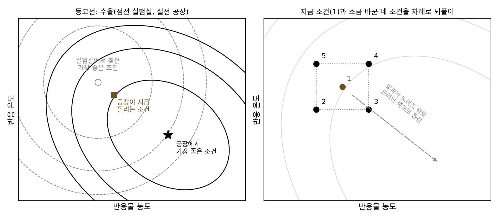
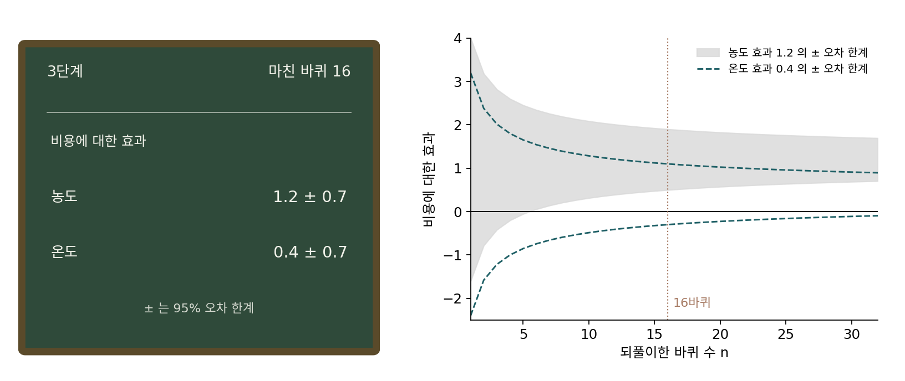
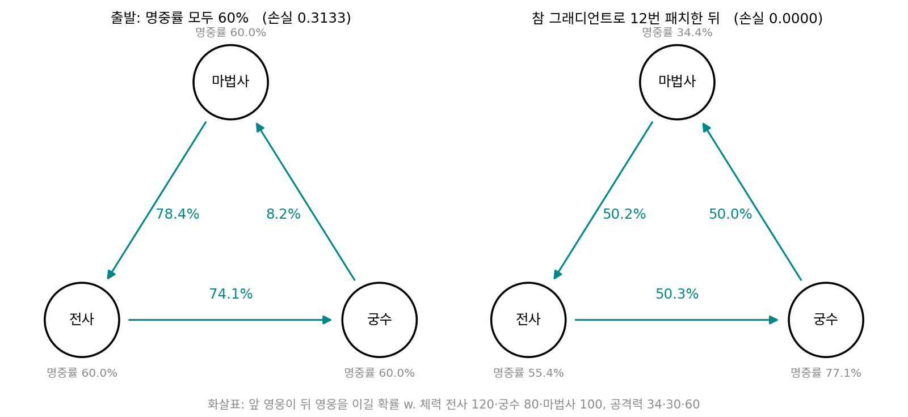
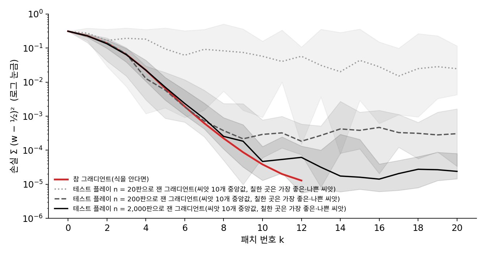
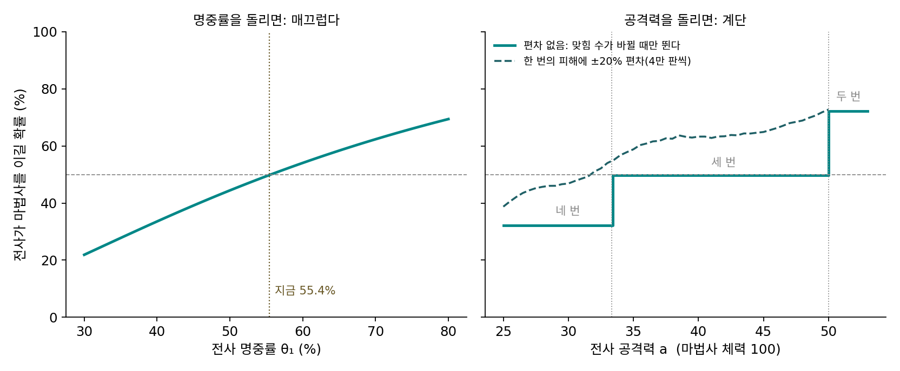
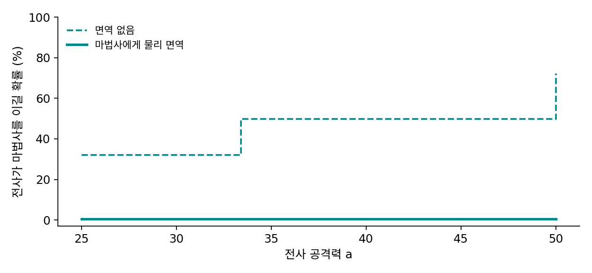
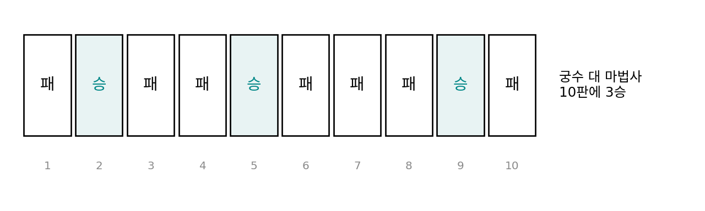
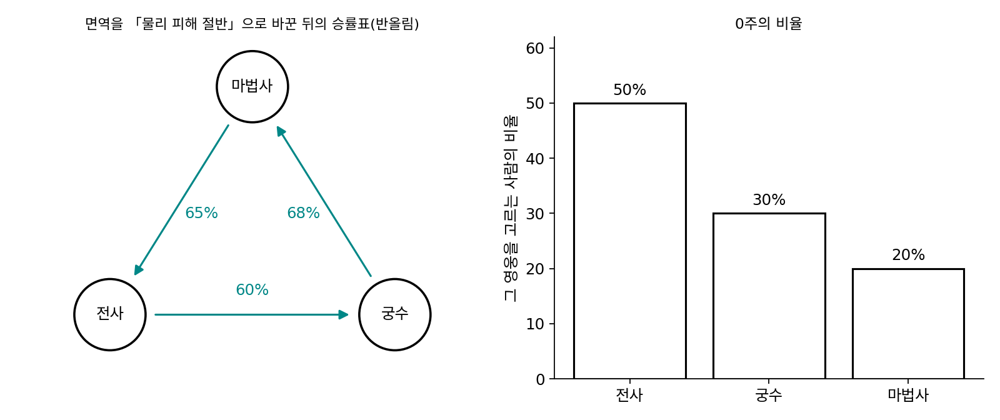
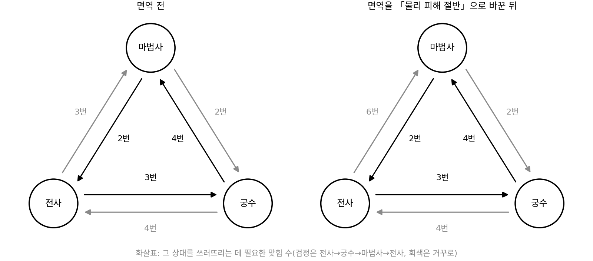
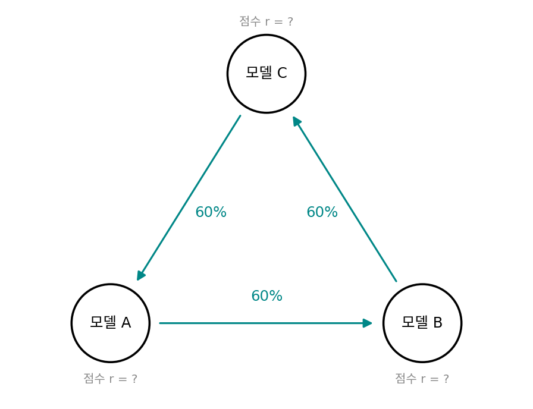

구조를 쓰는 탐색: 값만 잴 때 무엇을 더 알면 덜 재나
이 장의 물음
값만 재는 방법들은 재는 횟수가 비쌌다. 유한 차분은 파라미터 하나마다 함수 값을 한 번씩 더 재야 그래디언트 하나를 얻었고, 진화 전략으로 신경망 정책을 학습할 때는 일꾼 1,440명이 각자 게임을 한 판씩 해야 한 스텝을 내디뎠다. 그런데 우리가 날마다 쓰는 탐색 가운데에는 값만 재는 것처럼 보이는데도 놀랄 만큼 빨리 끝나는 것이 있다. 지도 앱은 큰 도시에서도 가장 빠른 길을 1초 안에 내놓는다. 도시를 가로지르는 길의 수는 교차로를 지날 때마다 몇 배씩 불어나니, 길을 하나씩 재서 고르는 것은 아닐 것이다.
거꾸로, 한 번 재는 값이 싸 보이는데도 오래 걸리는 탐색도 있다. 온라인 게임 운영사는 테스트 플레이를 프로그램으로 돌려 승률을 잴 수 있는데도, 게시판에는 「밸런스 패치가 느리다」는 불평이 늘 올라온다. 어떤 불균형은 수치를 몇 번 고쳐도 풀리지 않아서, 결국 스킬의 규칙을 통째로 바꾼다.
두 경우를 가르는 것은 재는 기계가 얼마나 빠른가보다 문제에 대해 값 말고 무엇을 더 아느냐에 있다. 이 장은 다음 물음에 차례로 답한다.
- 테스트 플레이로 잰 승률의 그래디언트를 따라 수치를 고치면 언제 풀리고, 언제는 아무리 고쳐도 끝나지 않을까?
- 길 하나에 걸리는 시간이 구간마다 걸리는 시간의 합이라는 것을 알면, 길을 하나하나 재지 않고도 가장 빠른 길을 고를 수 있을까?
- 좋았던 답들이 서로 닮았다면, 답을 버린 뒤에도 무엇을 남겨 두어야 다음 답을 더 잘 뽑을까?
- 남은 비용이 적어도 얼마인지 알면, 재지 않고 버려도 되는 곳을 장담할 수 있을까?
밸런스 패치: 수치를 돌려 풀리는 것과 아닌 것
온라인 게임 게시판에는 늘 같은 글이 올라온다. 「상대 캐릭터가 너무 세다」, 「내 캐릭터만 약하다」, 「이렇게 뻔한 걸 운영사는 왜 빨리 안 고치나」. 운영사도 손을 놓고 있지는 않다. 사람이 직접, 또는 프로그램으로 테스트 플레이를 돌려 승률을 재고, 공격력이나 체력 같은 수치를 조금씩 바꾼 패치를 낸다. 그런데 어떤 문제는 수치를 몇 번 고쳐서 풀리고, 어떤 문제는 스킬이나 아이템의 규칙 자체를 바꾸고서야 풀린다.
운영사가 하는 일을 최적화의 말로 옮기면 0차 최적화다. 승률을 수치로 미분하는 식은 없고, 수치를 넣고 판을 돌려 승률이라는 값을 읽을 뿐이다. 값 하나를 읽을 때마다 판을 수백, 수천 번 돌려야 한다. 테스트 플레이로 잰 그래디언트를 따라 수치를 고치는 방법은 언제 통하고, 언제 아무리 고쳐도 끝나지 않을까?
역사: 공장을 세우지 않고 실험하기
통계학자 조지 박스(George E. P. Box)는 1948년부터 8년 동안 영국의 화학 회사 ICI(임페리얼 케미컬 인더스트리스)의 염료 부문에서 일했다. 1951년에 그는 K. B. 윌슨(K. B. Wilson)과 함께, 조건 몇 개를 조금씩 바꾼 작은 실험으로 수율이 늘어나는 방향을 재고 그 방향으로 옮겨 가는 방법을 냈다. 그런 실험은 따로 기간을 정해 계획하고 돌리는 실험이었다. 박스는 1957년 『응용 통계(Applied Statistics)』에 실은 「진화적 운영(Evolutionary Operation)」에서 그 벽을 이렇게 적었다. 작은 규모에서 찾은 가장 좋은 조건은 공장의 가장 좋은 조건에 대한 첫 근사일 뿐이어서, 공장에 옮기면 조건을 꽤 고쳐야 한다.

공장에서 실험하기는 어려웠다. 박스가 예로 든 공정은 반응기를 한 번 돌릴 때마다 제품이 한 통씩 나오는 공정이었는데, 그 제품은 그대로 팔 물건이라 품질이 떨어지는 통을 만들 수 없었고, 그래서 조건을 아주 조금만 바꿀 수 있었다. 그런데 조금 바꾸면 그 효과가 공장 규모의 큰 노이즈에 묻히니, 박스의 답은 공장을 늘 조금씩 흔들며 돌리는 것이었다. 반응물 농도와 반응 온도 두 조건을 지금 조건 둘레에서 조금씩 바꾼 다섯 조건으로 제품을 한 통씩 만들고, 이 한 바퀴를 끝없이 되풀이한다. 생산은 어차피 계속되니 바퀴 수를 늘려 노이즈를 평균으로 줄이면 되고, 조건마다 쌓인 평균과 95% 오차 한계는 공장장 사무실에 걸어 둔 정보판에 적었다. 정보판은 보통 칠판이었고, 이 일을 맡은 직원이 분필로 숫자를 늘 새로 고쳐 적었다. 논문에 실린 예에서는 16바퀴 뒤 비용에 대한 농도의 효과가 1.2 ± 0.7, 온도의 효과가 0.4 ± 0.7 이었고, 공장장은 농도만 낮춰 보기로 했다.


조건을 크게 바꿔서 한 번에 확인하면 되잖아요. 게임도 테스트 서버에서 수치를 확 바꿔 보면 되고요.

그 공장에서 나온 통은 모두 손님에게 팔 물건이었어요. 크게 바꿨다가 규격에 안 맞는 통이 나오면 어떻게 되죠?

그건 버려야겠네요. 그래서 조금씩만 바꿨구나.

조금씩 바꾸면 효과가 노이즈에 묻히니까 평균을 많이 내야 하고요. 한 바퀴에 다섯 통이니까 16바퀴면… 80통을 만든 정보판을 보고서야 공장장이 농도를 낮춰 보기로 정한 거예요.

그 계산도 공장 사람들이 칠판 앞에서 해야 했어요. 그래서 평균과 차이만으로 끝나는 방법이어야 했고요. 지금이면 센서 기록을 모아 바로 회귀를 돌리겠죠.
그래도 한 통 만드는 시간은 지금도 못 줄이겠네요. 한 번 재는 데 드는 값이 문제였네.

게임은 테스트 플레이를 프로그램으로 돌리니까 거의 공짜 아닌가요? 그런데도 운영사가 느린 건 왜일까요?
세 영웅의 승률표
물음을 숫자로 따지려면 답을 미리 아는 작은 게임이 좋으니, 이 책이 지은 게임 「세 영웅」으로 시작하자. 전사, 궁수, 마법사 가운데 두 영웅이 한 판씩 맞붙는데, 라운드마다 둘이 동시에 한 번씩 쳐서 명중률의 확률로 맞히고, 맞히면 공격력만큼 상대 체력을 깎는다. 체력이 0 이하가 되면 지고, 같은 라운드에 둘 다 쓰러지면 반 판씩 이긴 것으로 센다. 체력은 전사 120, 궁수 80, 마법사 100이고 공격력은 34, 30, 60이라서, 상대를 쓰러뜨리는 데 전사는 세 번, 궁수는 네 번, 마법사는 두 번 맞혀야 한다.
운영사가 고치는 수치는 명중률 셋 θ₁, θ₂, θ₃(세타, 차례로 전사·궁수·마법사)이다. 처음에 셋을 모두 60%로 두면 전사가 궁수를 이길 확률은 74.1%, 궁수가 마법사를 이길 확률은 8.2%, 마법사가 전사를 이길 확률은 78.4% 다. 궁수는 두 상대에게 평균 17.1% 를 이기고 마법사는 85.1% 를 이기니, 게시판이 어떤 글로 찰지 짐작이 간다. 운영사의 목표는 세 상성을 모두 50% 가까이 맞추는 것이고, 50% 에서 벗어난 정도의 제곱을 더한 값을 손실로 둔다.

승률의 식을 안다면 패치 한 번이 경사하강 한 스텝이다. 정확한 승률로 그래디언트를 재어 고치면 손실은 4번 패치 뒤 0.0226, 8번 뒤 0.00022 로 줄고, 12번 뒤에는 명중률이 전사 55.4%, 궁수 77.1%, 마법사 34.4% 가 되어 세 상성이 50.3%, 50.0%, 50.2% 에 놓인다. 운영사는 식을 모르니 승률을 테스트 플레이로 재야 한다. n 판으로 잰 승률은 50% 근처에서 표준편차가 √(0.25/n) 이라, 20판이면 11.2%p, 200판이면 3.5%p 흔들린다. 그래디언트 한 번에 명중률 셋 × 양쪽 두 번 × 상성 셋, 모두 18n 판이 든다.
| 상성마다 판 수 n | 패치 한 번에 드는 판 | 20번 패치 뒤 손실(씨앗 10개 중앙값) | 50% 에서 가장 먼 상성(중앙값 / 가장 나쁜 씨앗) |
|---|---|---|---|
| 20 | 360 | 0.0248 | 13.1%p / 25.9%p |
| 200 | 3,600 | 0.0003 | 1.5%p / 3.0%p |
| 2,000 | 36,000 | 0.00002 | 0.5%p / 0.8%p |

승률이 명중률에 매끄럽게 따라 변하는 동안에는 잰 그래디언트가 손실을 내려 주지만, 그 대가는 판 수다. 20판으로 재면 노이즈가 그래디언트를 덮어 20번을 고쳐도 13%p 넘게 어긋난 상성이 남고, 200판이면 패치마다 3,600판을 돌려야 1.5%p 안쪽에 닿는다. 운영사가 「빨리 반영하지 않는」 첫째 원인이 여기에 있다.
이번에는 명중률 대신 전사의 공격력 a 를 고친다고 하자(명중률은 12번 패치 뒤 값으로 둔다). 마법사의 체력은 100이니 공격력 33 이면 네 번, 34 면 세 번 맞혀야 쓰러진다. 공격력을 25 에서 50 까지 0.1 씩 바꾼 251 곳에서 전사가 마법사를 이길 확률은 32.1%, 49.8%, 72.2% 세 값뿐이고, 100/3 과 50 에서만 뛴다. 그래서 손실을 공격력으로 잰 전진 차분은 34 에서 간격 0.1 로 재면 0이고, 33.3 에서 간격 0.1 로 재면 계단을 넘어 −0.32 가 나오지만 간격을 0.01 로 줄이면 다시 0 이다. 0차 최적화에서 정확도의 계단을 가우시안 노이즈로 흐리게 해 그래디언트를 되살렸던 것처럼, 게임에서는 한 번의 피해에 편차를 주는 규칙이 공격력의 계단을 흐린다. 피해를 공격력의 80~120% 에서 고르게 뽑으면 공격력 33 에서 34 로 갈 때 승률 차이가 17.7%p 에서 2.8%p 로 줄어 매끄러운 언덕이 된다.

운영사가 손댈 수 있는 수치와 그 범위가 정하는 설정 전체를 탐색 공간 (고칠 수 있는 설정의 모음 / search space)이라 한다. 명중률 셋을 5%에서 95% 사이로 고친다면 탐색 공간은 3차원 상자이고, 공격력을 더하면 그중 한 축은 계단 위를 걷는다. 그래디언트는 그 상자 안에서 어느 방향으로 옮길지만 알려 준다. 상자 안에 답이 아예 없으면 어떻게 될까?
ML에서: 하이퍼파라미터의 세 종류
모델을 학습시킬 때 고르는 설정도 같은 세 종류로 나뉜다. 학습률이나 가중치 감쇠 세기는 명중률처럼 검증 손실이 매끄럽게 따라 변하는 편이라, 값을 몇 번 재며 내려가는 0차 방법이 통한다. 층 수, 헤드 수, 배치 크기는 정수라서 공격력처럼 칸 사이를 건너뛴다. 어떤 옵티마이저와 어떤 층 구조를 쓸지는 규칙 자체를 고르는 일이라, 수치를 아무리 돌려도 닿지 않는다. 진화 알고리즘으로 신경망 구조를 찾던 일이 여기에 해당한다. 그리고 생성기와 판별기를 맞붙여 배우는 GAN 처럼 고치는 동안 목표가 함께 움직이는 경우도 있다. 이 장의 나머지는 이런 탐색에서 값 말고 무엇을 더 알면 덜 재고도 찾는지를 묻는다.
개념 다지기: 공격력을 얼마로 올려도 이기지 못한다면

다음 시즌에 마법사가 「물리 면역」 스킬을 얻었다고 해요. 전사의 칼은 마법사에게 들어가지 않아요. 앞에서처럼 정확한 승률로 명중률을 40번 고치면 어디에 닿을까요?

일단 돌려 볼게요. 명중률이 55.4%, 77.4%, 34.5% 에서 멈추고, 거기서 잰 그래디언트가 −0.0011, −0.0016, −0.0007 이에요. 그래디언트가 거의 0이면 손실이 가장 낮은 곳에 온 거니까, 이 탐색이 할 일은 끝났네요.
그런데 손실이 0.25 야. 전사→궁수 50.0%, 궁수→마법사 49.9% 인데 마법사→전사가 100% 라서 그 항 하나가 (0 − 0.5)² = 0.25 를 차지하고 있어.

전사의 명중률을 바꾸면 그 0.25 는 얼마나 바뀌죠?

전사가 마법사에게 0% 인 건… 명중률을 몇으로 하든 칼이 안 들어가니까 0% 에서 움직이지 않아요. 공격력을 34 에서 60, 120 으로 올려 봐도 0% 고요.
그럼 그래디언트가 0인 것은 무엇을 말해 줘요?

명중률을 고쳐서는 더 내려갈 수 없다는 것만요. 답에 왔다는 뜻이 아니었어요. 남은 0.25 는 탐색 공간 어디에도 0이 되는 곳이 없는 항이에요.
그럼 면역을 바꿔야겠네. 「물리 피해 절반」으로 바꾸면 전사가 마법사에게 17씩 들어가니까 여섯 번 맞히면 되고, 전사→마법사가 다시 명중률에 따라 움직여. 60번 고쳐 보니 손실이 0.0651 까지 내려가.
그런데 0까지는 안 가네. 전사→궁수 60.4%, 궁수→마법사 67.8%, 마법사→전사 65.0%… 셋이 돌아가며 이기는 꼴이야.
규칙을 바꾸면 탐색 공간이 바뀌어요. 새 공간에는 새 문제가 생길 수 있고요. 그 문제는 아래 문제에서 하나씩 보죠.

엘리베이터 버튼을 아무리 눌러도 그 엘리베이터가 서지 않는 층이면, 버튼이 아니라 엘리베이터를 바꿔 타야 하는 거랑 비슷하네요.
문제 1. 열 판에 세 번 이긴 궁수
궁수를 주로 하는 한 사람이 마법사와 10판을 붙어 3번 이겼고, 「궁수는 마법사에게 30% 밖에 못 이긴다」고 게시판에 썼다. (가) 궁수와 마법사가 실제로 반반이라면 10판에 3승 이하가 나올 확률은 얼마인가? (나) 운영사가 한 상성의 승률을 95% 오차 한계 ±2.5%p 로 재려면 몇 판이 필요한가? 오차 한계는 박스의 정보판처럼 표준편차의 두 배로 잡는다. (다) 「세 영웅」 장난감에서 상성마다 그 판 수로 그래디언트를 한 번 재면 몇 판이 드는가?

30% 면 확실히 약한 거 아니에요? 저도 그 상성은 하면 거의 지던데요.
실제로 반반인 두 영웅이 10판을 붙으면, 한쪽이 3승 이하를 하는 일이 얼마나 자주 생길까요?
이항분포로 0승부터 3승까지 더해 볼게요. (1 + 10 + 45 + 120)/1024 = 176/1024 이니까 0.172 예요.
여섯 번에 한 번꼴이네. 반반인데도 그 정도로 지는 사람이 흔하구나. 그 글만 보고는 약한지 모르겠어요.
(나)는요? 운영사가 그 상성을 믿을 만하게 재려면요.
음, 표준편차부터 볼게요. n 판의 승률은 표준편차가 √(0.25/n) 이니까 두 배는 1/√n 이에요. 1/√n = 0.025 로 놓으면 n = 1,600판이에요. 10판이면 오차 한계가 ±31.6%p 나 되고요.
그럼 (다)는 18 × 1,600 = 28,800판이네. 패치 한 번 고르는 데 그만큼 돌리고, 실제 서버에 낸 패치가 맞았는지 보려면 또 사람들 판이 쌓일 때까지 기다려야 하고요.

농구 동아리에서 자유투 열 개 중에 셋 들어갔다고 슛 폼을 다 바꾸지는 않잖아. 운영사가 느린 것도 그거구나. 불평은 열 판짜리 기록이고, 운영사는 한 상성에 천육백 판을 봐야 하니까.
문제 2. 고르는 사람이 옮겨 가면
면역을 「물리 피해 절반」으로 바꾼 뒤의 승률표가 전사→궁수 60%, 궁수→마법사 68%, 마법사→전사 65% 다(반올림). 플레이어는 상대를 고르지 못하고, 그 주에 사람들이 고른 비율대로 상대를 만난다(같은 영웅끼리는 50%). 0주에 전사·궁수·마법사를 고르는 비율은 50%, 30%, 20% 다. (가) 영웅마다 그 주의 승률(체감 승률)은 얼마인가? (나) 세 영웅의 체감 승률이 모두 50% 가 되는 비율이 있는가? (다) 사람들이 매주 xᵢ ← xᵢ · fᵢ / (비율로 평균 낸 f) 로 옮겨 간다면(fᵢ 는 영웅 i 의 체감 승률) 60주 동안 비율은 어떻게 되는가?

(가)는 상대 비율로 평균 내면 돼요. 마법사는 전사를 만나면 65%, 궁수를 만나면 32%, 마법사끼리는 50% 니까 0.5 × 0.65 + 0.3 × 0.32 + 0.2 × 0.5 = 0.521 이에요. 같은 식으로 전사 50.0%, 궁수 48.6% 고요. 마법사가 52.1% 로 제일 세니까, 마법사 명중률을 조금 내리는 패치를 하면 되겠네요.
0주와 1주 사이에 승률표를 바꾼 사람이 있었나요? 마법사가 세 보이는 건 무엇 때문이죠?
아무도 안 바꿨어요. 전사를 고른 사람이 절반이라서… 마법사가 전사를 65% 로 이기는 판을 많이 만난 거네요. 마법사가 센 게 아니라 지금 전사가 많은 거예요.
그럼 (나)를 풀어 보면 알겠네요.
세 체감 승률을 50% 로 놓고 비율의 합을 1로 두면, 41.9%, 34.9%, 23.3% 에서 셋 다 50% 예요. 승률표는 그대로 둬도 되는 비율이 있어요.
(다)를 돌려 봤는데 거기 머물지 않아. 가장 많이 고른 영웅이 16주에 궁수, 31주에 전사, 53주에 마법사, 58주에 궁수로 바뀌고, 50% 비율에서 떨어진 거리가 0주 0.10 에서 60주 0.19 로 오히려 멀어져.
50% 비율에서 오히려 멀어진다고?
학교 앞 식당 셋 중에 줄이 짧은 데로 다들 몰려가면 거기 줄이 길어져서 다음 주엔 또 다른 데가 짧아지는 거랑 같아요.
운영사의 목표인 「체감 승률 모두 50%」는 사람들이 고르는 비율에 따라 매주 움직여요. 운영사가 52.1% 를 보고 마법사를 내리면 사람들도 그 패치를 보고 또 옮겨 가고요. 한쪽이 혼자 손실을 내리는 최적화로 보면 이렇게 맴돌아요. 두 쪽이 서로를 보고 고치는 놀이로 봐야 하고, 생성기와 판별기가 맞붙는 GAN 의 학습도 이런 꼴이에요.
문제 3. 명중률 셋으로 상성 셋
「세 영웅」에서 명중률 셋 θ₁, θ₂, θ₃ 으로 세 상성을 모두 50% 로 맞추려 한다. (가) 면역 전 규칙에서 12번 패치한 명중률(55.4%, 77.1%, 34.4%)에 모두 0.8 을 곱하면 승률표는 어떻게 되는가? 명중률 셋 가운데 승률표를 실제로 바꾸는 방향은 몇 개쯤인가? (나) 상대를 쓰러뜨리기까지 걸리는 평균 라운드는 맞힘 수 ÷ 명중률이다. 두 영웅의 평균 라운드가 같으면 대략 반반이라고 놓고, 세 상성이 모두 반반이 될 조건을 맞힘 수로 적어라. (다) 면역을 「물리 피해 절반」으로 바꾼 뒤에는 (나)의 조건이 성립하는가? 명중률을 더 고치면 풀리는가?

모르는 수가 셋이고 맞출 식이 셋이니까 풀리겠죠. 면역 전에도 풀렸고요. (가)는 돌려 볼게요. 0.8 을 곱하면 49.8%, 50.4%, 50.0% 예요. 거의 안 바뀌는데요?
명중률 셋을 함께 0.8 배 했는데 승률표가 0.5%p 남짓만 움직였다면, 그 방향은 고칠 수 있는 방향으로 쳐 줄 수 있을까요?
그 방향은 없는 거나 마찬가지네요. 그럼 실제로 쓸 수 있는 방향은 둘쯤이고, 맞출 식은 셋이에요. 면역 전에는 운이 좋았던 거고요.
(나)를 적어 볼게. 전사와 궁수가 반반이려면 3/θ₁ = 4/θ₂, 궁수와 마법사는 4/θ₂ = 2/θ₃, 마법사와 전사는 2/θ₃ = 3/θ₁ 이야.
세 식을 다 곱하면요?
곱해 볼게요. 왼쪽은 3 × 4 × 2 를, 오른쪽은 4 × 2 × 3 을 명중률 셋의 곱으로 나눈 거니까… 어, θ₁θ₂θ₃ 이 양변에 똑같이 있어서 지워져요.
그럼 무엇이 남죠?

고리를 한 방향으로 돈 맞힘 수의 곱과 거꾸로 돈 곱이 같아야 한다는 조건만 남아요. 면역 전에는 24 와 24 로 같고요.
피해 절반 뒤에는 전사가 마법사에게 여섯 번이니까 거꾸로가 4 × 2 × 6 = 48 이야. 명중률을 5~95% 안에서 아무리 골라도 손실이 0.0436 밑으로 안 내려가고, 그때도 60.6%, 63.4%, 61.9% 로 셋이 돌아가며 이겨.
명중률은 고리의 곱에서 지워지니, 명중률을 아무리 고쳐도 24 대 48 이라는 두 곱은 바뀌지 않아요. 곱을 맞추려면 맞힘 수라는 정수, 그러니까 체력과 공격력의 계단을 넘거나 규칙을 다시 바꿔야 해요. 고칠 수 있는 방향의 수와 맞출 목표의 수를 먼저 세어 보면, 수치로 풀릴 문제인지 미리 알 수 있어요.
문제 4. 엘로 점수 하나로 세 모델 줄 세우기
언어 모델 셋 A, B, C 를 사람 투표로 둘씩 비교했더니 A 가 B 를, B 가 C 를, C 가 A 를 각각 60% 로 이겼다(설명을 위해 지은 숫자다). 모델마다 점수 r 하나를 두고 i 가 j 를 이길 확률을 1/(1 + 10(rⱼ − rᵢ)/400) 로 읽는 엘로 점수로 줄을 세우려 한다. (가) 두 모델의 점수 차가 얼마면 60% 인가? (나) 세 점수를 어떻게 잡으면 이 표에 가장 잘 맞고, 그때 예측은 얼마인가? (다) 엘로 점수로 맞출 수 있는 승률표의 조건을 이길 확률과 질 확률의 비(오즈)로 적어라.

(가)는 60% 의 오즈가 0.6/0.4 = 1.5 니까 점수 차를 Δ(델타)라 하면 10Δ/400 = 1.5, Δ = 400 log₁₀ 1.5 = 70.4 점이에요.
(나)는 최소제곱으로 맞춰 봤는데 세 점수가 거의 같게 나와. 예측은 셋 다 50.0% 이고. A 를 70 점 올리면 A→B 는 맞는데 C→A 가 더 틀려지니까 그런가 봐.
점수 하나로 이 표를 맞추지 못하는 건 어디서 오는지, 오즈로 보면 보일 거예요.
엘로에서 i 가 j 를 이길 오즈는 10(rᵢ − rⱼ)/400 이에요. A→B, B→C, C→A 세 오즈를 곱하면 지수가 (r_A − r_B) + (r_B − r_C) + (r_C − r_A) = 0 이라서 곱이 늘 1 이에요.
그런데 이 표는 1.5 × 1.5 × 1.5 = 3.375 예요. 고리를 따라 오즈를 곱해 1 이 아니면 점수 하나로는 못 맞춰요. 「세 영웅」에서 명중률이 고리의 곱에서 지워지던 계산이랑 같아요.
2018년 데이비드 발두치(David Balduzzi)와 동료들은 「평가를 다시 평가하기(Re-evaluating Evaluation)」에서, 가위바위보처럼 고리가 있는 놀이에서는 엘로 점수가 예측하는 힘이 없고 가위·바위·보가 모두 같은 점수를 받는다고 적었어요. 그들은 점수에 고리를 나타내는 성분을 더한 다차원 엘로를 냈고요.
모델 순위표에서 점수가 비슷하다고 아무 짝이나 반반인 건 아니겠네요. 점수 하나가 담는 건 줄 세울 수 있는 성분까지고, 서로 물고 물리는 성분은 거기서 빠지니까요.